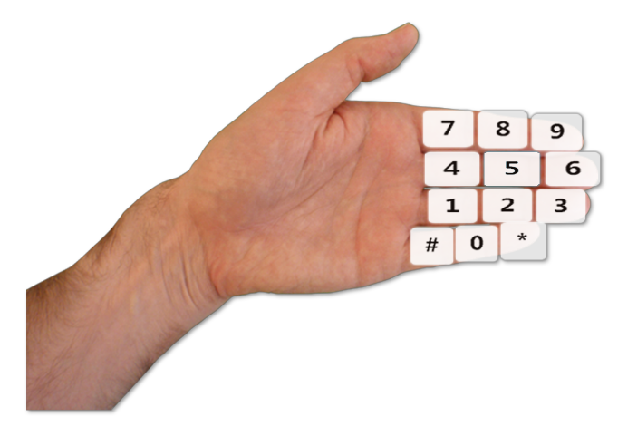
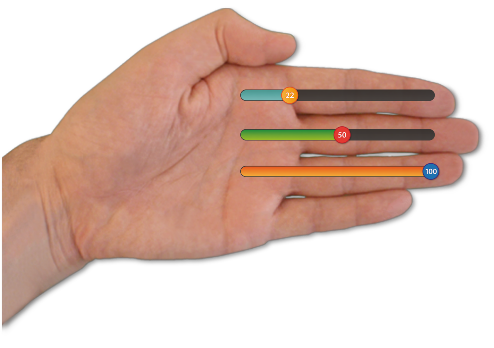
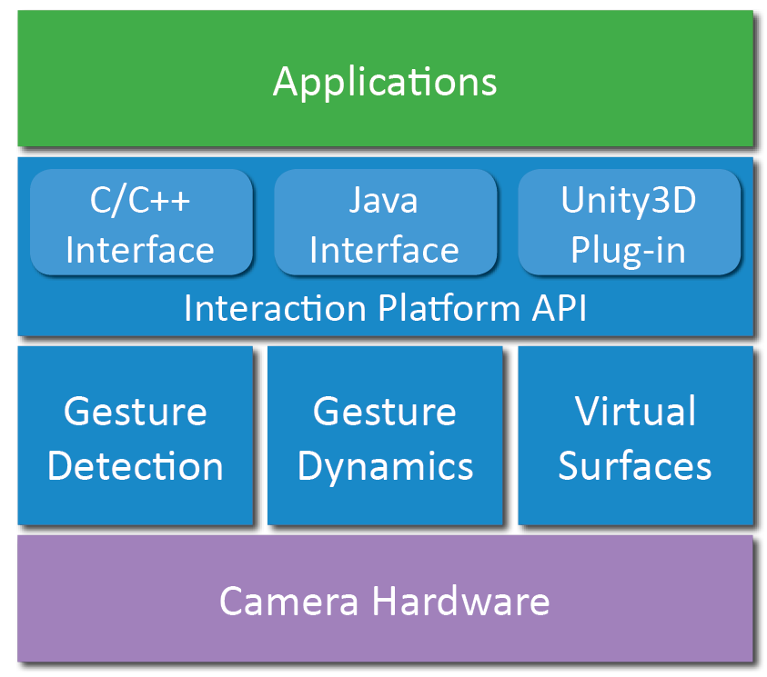

Augumenta develops interaction solutions for smart glasses. The Augumenta Interaction Platform (AIP) SDK brings hand gesture control and virtual surfaces to the hands of enterprise users. These methods are a robust alternative to voice and touch control, and they enable powerful data input capabilities in harsh field conditions.
The SDK is being used on various smart glasses, such as ODG R-6 and R-7, Epson Moverio BT-200, Google Glass and ChipSiP SiME, and happily co-exists with AR and gaming toolkits that also require a real-time camera access.
To learn more about us and the SDK, please scroll down this page by grab-and-drag gestures.
The Augumenta Interaction Platform SDK uses device camera to analyze hand poses, location, and movement, and dispatches this information to application layer as events. SDK API is easy to use, and developing gesture-controllable applications requires just a few lines of code.
 
Virtual keypads, sliders, and other input widgets provide data input capabilities never seen on smart glasses before. The Augumenta Interaction Platform turns glasses into a powerful tool for workers on the field and shop floor.

As a developer, you get to choose between 3 different APIs: Android Java, Unity3D or C/C++. The SDK comes with comprehensive documentation and example applications in source code format for each of them. You'll be able to create your first gesture-enabled application in no time!
| Supported Operating Systems | Android Linux Other POSIX-compatible operating systems |
| Supported Smart Glasses | All devices with a camera (a large AR display is recommended for virtual surfaces) |
| Developer APIs | C/C++ (on all platforms) Java (on Android) Unity3D (on Android) |
| Number of supported gestures | 8 |
| Supported event types | Appearance Disappearance Movement Swipe Transition |
| Supported hands | Left, right, or both (user configurable) |
| Parallel Processing | 1..n cores (user configurable) |
| Camera Requirements | 2D RGB |
| Minimum Camera Frame Rate | 2fps, variable rates supported |
| Minimum Camera Resolution | 128x96, variable rates supported |
| Camera Control Modes | AIP in control (master) 3rd party in control (slave) |
| Supported 3rd Parties | Metaio Unity3D Vuforia Camera plug-in API for other toolkits |
| Protected by Patents | Yes |
| Documentation | SDK User Guide API Reference Manual C, Unity3D and Android sample codes |